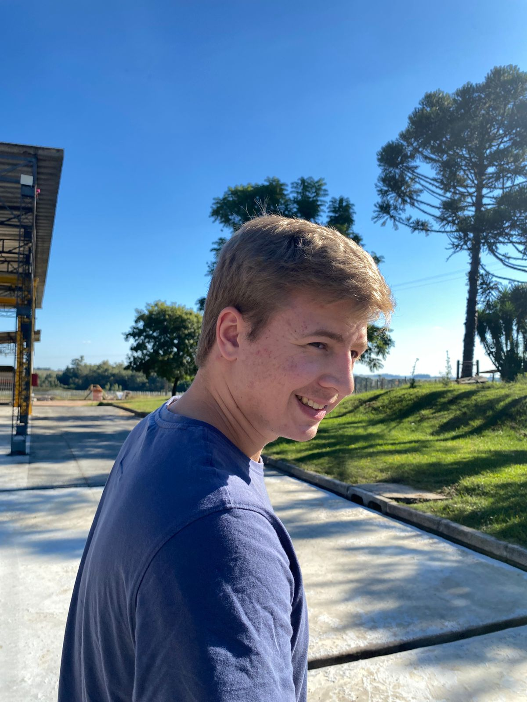

Systems Analysis and Development
IFSul (Brazil) and UTEC (Uruguay)
-Present

I'm Marcos Schlick!
I'm a binational Systems Analysis and Development student interested in explainable AI, heuristic planning, and autonomous robot navigation.
IFSul (Brazil) and UTEC (Uruguay)
-Present
-Present
Provide user support, maintain computers and printers, install software, and assist with server maintenance.
-
Taught chess and basic computer skills to children and young people, supporting digital inclusion and cognitive development.
-
Developed Node.js APIs for an Open Finance platform using Docker, AWS, Git, and SQL in an agile environment.
A complete overview of my education and experience is available in my curriculum vitae.
View CV